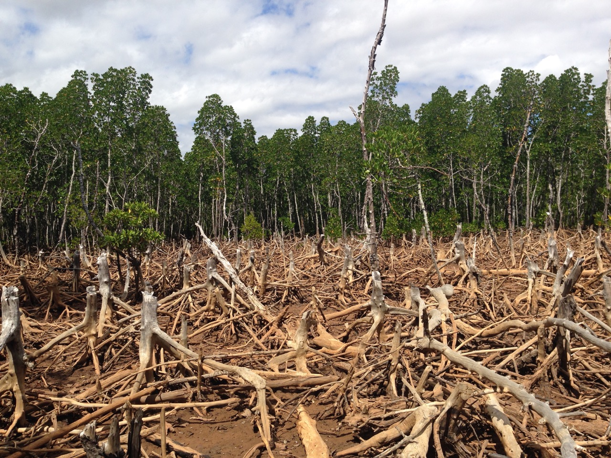
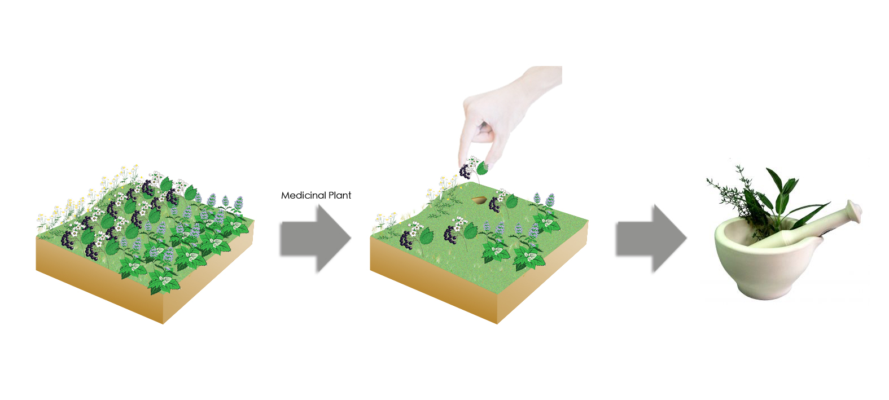
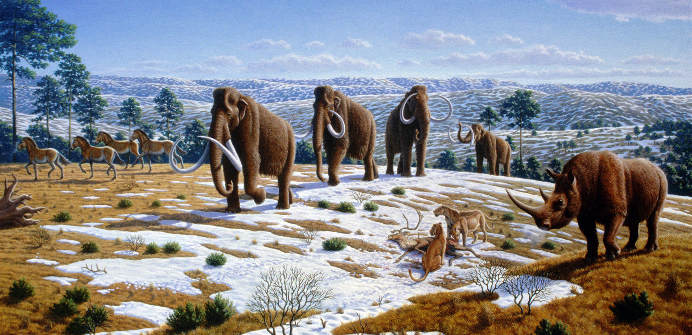

Oh no! Not caring about the environment increases the risk of losing important stuff.
Do you know what happens when animals and plants go extinct?
Animals help disperse plant seeds and are rich for soil when their bodies begin to decompose. We also use animals for food and sometimes utilize their fur,wool, etc. to make clothing. When a group of species dies out, it throws off the balance in biodiversity as animals need other animals for food.
Plants maintain the atmosphere as they provide oxygen for all living things. They also reduce pollution by giving off oxygen. Plants are also used in medicines and supply us with food.
Extinction of animals and plants is dangerous because we need all species to survive and take part in our biodiversity. Humanity will be the cause of the earth's sixth mass extinction as human activity has increased deforestation, climate change, and extinction of several species.
If we continue to neglect our responsibility of taking care of our Earth and everything in it, many species of animals and plants will be extinct the next 100 years.



Continue
<